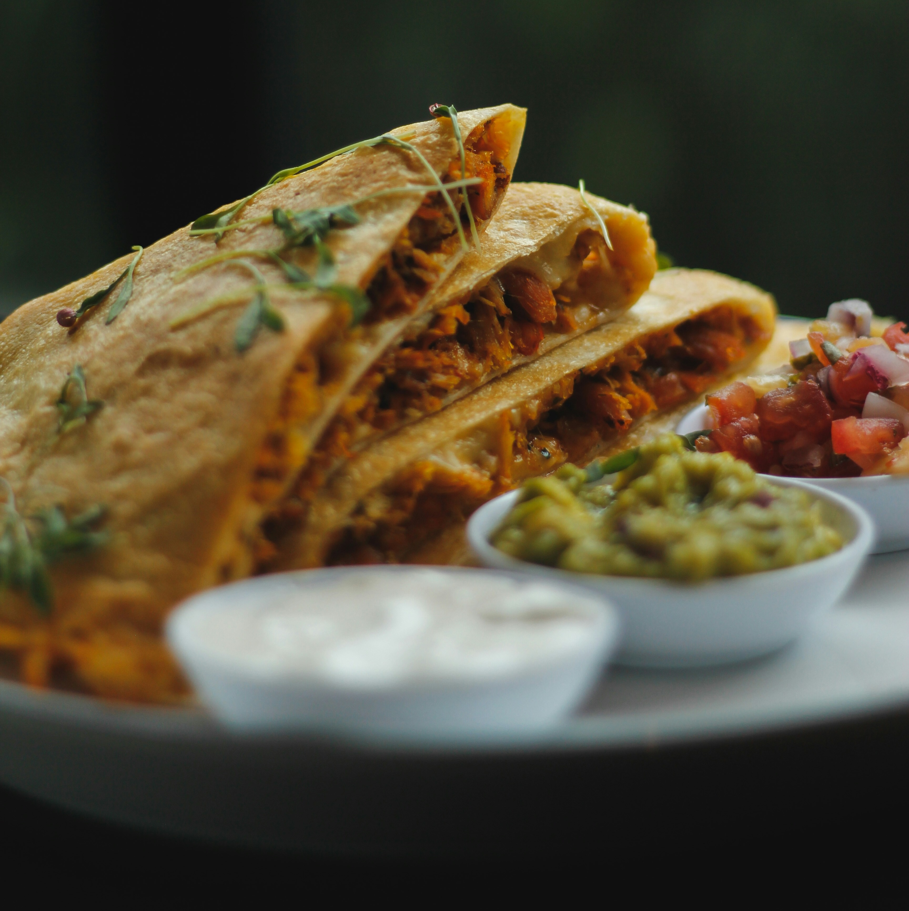
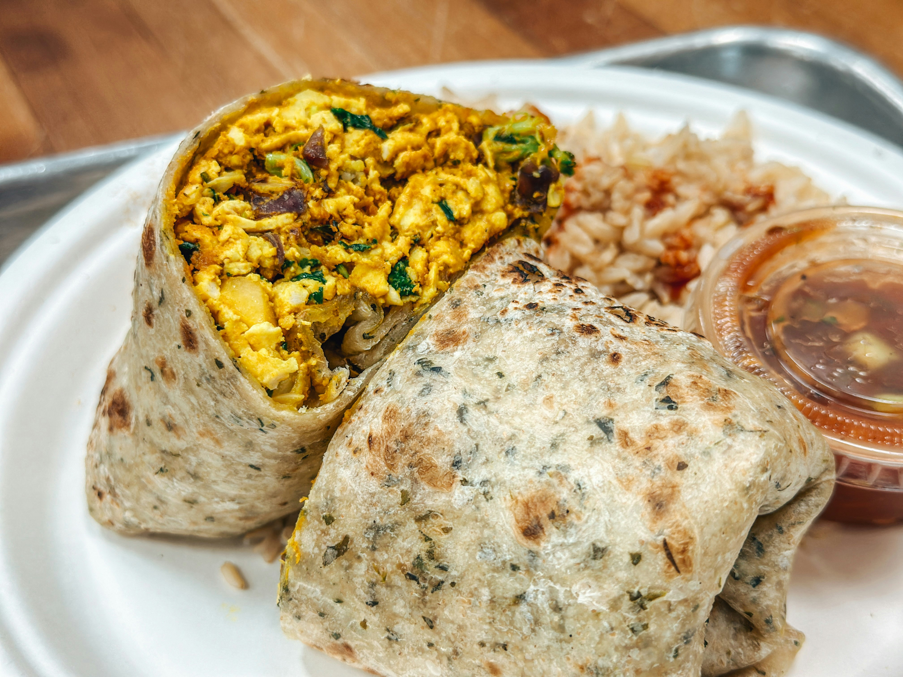

Chocolate mousse is my favourite dessert because I love chocolate and I find the airy texture really highlight the taste of it.
My brother does the best chocolate dessert ever. I remember one time, where we were doing some and the dish just spilled all the snow white on the floor. It turned out to be not really balanced but we had fun making it.

Here are all the ingredients you need to do this dish :
| ingredient | quantity |
|---|---|
| dark chocolate (70%) | 150g |
| egg white | 6 |
| golden sugar | 30g |
| salt | one pinch |
Mathew loves this dish beacuse he ate a lot of these during his childhood.
Here are all the ingredients you need to do this dish :
| ingredient | quantity |
|---|---|
| flour Tortillas | 4 medium |
| cheddar cheese | 8 tbsp |
| monterey jack cheese | 8 tbsp |
| chicken breast | 1 small, chopped |
| onion | 1 small, diced |
| tomato | 1 small, diced |
| red bell pepper | 1 small, diced |
| alt & pepper | a pinch |
Emmanuel loves this dish beacuse you find anything you need in it. It is very complete.
Here are all the ingredients you need to do this dish :
| ingredient | quantity |
|---|---|
| flour Tortillas | 4 medium |
| cooked steak | 1 small, sliced |
| onion | 1 small, diced |
| tomato | 1 small, diced |
| shredded cheese | |
| black beans | |
| sour cream | |
| chopped lettuce |